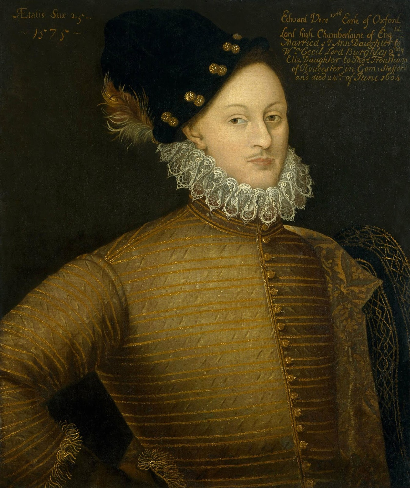

Oxfordian Choice

Edward de Vere
17th Earl of Oxford (1550–1604)
An elite aristocrat, royal ward, and courtier praised in his time as a premier poet and dramatist who squandered his estate and traveled Italy extensively.
17/17
Matches
High
Feudal Ties
1575
Italy Tour